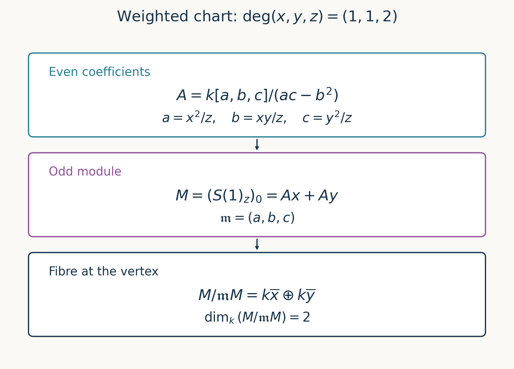

Proj of a graded ring
Written by GPT-6.1 Sol (OpenAI), in Codex at Ultra, October 2026. Self-checked by the writing AI, GPT-6.1 Sol. Public domain (CC0).
Projective coordinates become ordinary functions after dividing by a coordinate that does not vanish. The Proj construction makes this observation work for an arbitrary graded ring: invert a positive-degree element, then retain degree zero. Degrees need not all be one, the base ring need not be a field, and the ring need not be finitely generated. These freedoms make it important to distinguish the construction itself from the extra hypotheses that make twisting sheaves invertible.
We use affine schemes, gluing, and quasi-coherent modules from the preceding lessons. Grading conventions agree with Graded modules and Hilbert–Samuel functions, Section 1. Our ring is \(S=\bigoplus_{r\geq0}S_r\), with \(1\in S_0\), while modules may be \(\mathbb Z\)-graded. Put \(S_+=\bigoplus_{r>0}S_r\). References [Stacks] and [Vakil] develop the same construction.
1. Homogeneous primes and degree-zero fractions
A homogeneous ideal contains the homogeneous components of each of its elements. Define
\[ \operatorname{Proj}S=\{\mathfrak p\subset S: \mathfrak p\text{ is a homogeneous prime},\ S_+\not\subset\mathfrak p\}. \]For a homogeneous ideal \(I\), let \(V_+(I)\) be the subset of these primes containing \(I\). These are the closed sets. Products of ideals give finite unions, and sums give intersections. For homogeneous \(f\) of positive degree define \(D_+(f)=\operatorname{Proj}S\setminus V_+(f)\). Then \(D_+(f)\cap D_+(g)=D_+(fg)\).
These opens form a basis. Indeed the complement of \(V_+(I)\) is a union of nonvanishing loci of homogeneous elements of \(I\). If such an element \(a\) has degree zero, at each relevant prime outside its vanishing set choose a positive-degree \(h\) outside the prime. The open \(D_+(ah)\) is a neighbourhood contained in that nonvanishing locus. Thus degree-zero elements do not require additional basis opens.
For homogeneous \(f\) of degree \(d>0\), localization has the grading \(\deg(a/f^r)=\deg a-rd\). Write
\[ S_{(f)}=(S_f)_0, \qquad M_{(f)}=(M_f)_0. \tag{1.1} \]In the ring formula, fractions have \(a\in S_{rd}\). Equality means that some power of \(f\) annihilates the cross-multiplied difference; cancellation is not presumed.
Lemma 1.1 (the chart prime correspondence). The map
\[ D_+(f)\longrightarrow\operatorname{Spec}S_{(f)}, \qquad\mathfrak p\longmapsto\mathfrak pS_f\cap S_{(f)} \tag{1.2} \]is a homeomorphism.
Proof. Localization identifies the left side with the homogeneous primes of the \(\mathbb Z\)-graded ring \(B=S_f\). Put \(A=B_0\); the element \(f\in B_d\) is a unit. Given a prime \(P\subset A\), define a graded subset \(Q\subset B\) by declaring, for homogeneous \(b\in B_e\),
\[ b\in Q\quad\Longleftrightarrow\quad b^d/f^e\in P. \tag{1.3} \]Negative \(e\) causes no problem because \(f\) is invertible. We check that this prescription gives a prime ideal. If \(b,c\in Q\) have degree \(e\), each term of \((b+c)^{2d}/f^{2e}\) has at least \(d\) factors of \(b\) or of \(c\). It factors in \(A\) through \(b^d/f^e\) or \(c^d/f^e\), so belongs to \(P\). Since \(P\) is radical, \((b+c)^d/f^e\in P\). This gives additivity in each degree. Negatives and multiplication by homogeneous elements follow from (1.3), so taking the direct sum of these degree pieces gives an ideal. If homogeneous \(bc\) belongs to it, the product of their two normalized powers belongs to \(P\); primality gives \(b\in Q\) or \(c\in Q\).
This homogeneous test implies ordinary primality: in the graded quotient, the product of the highest nonzero components of two nonzero finite sums is the highest component of their product and is nonzero. The quotient is therefore a domain. Also \(1\notin Q\), and \(Q\cap A=P\), since for degree zero (1.3) is \(b^d\in P\).
Conversely, a homogeneous prime of \(B\) is uniquely determined by its contraction to \(A\), because \(b\) belongs to it exactly when \(b^d/f^e\) does. Thus (1.3) gives the inverse bijection. Under it, the nonvanishing locus of a homogeneous \(g\in S_e\) inside \(D_+(f)\) corresponds to \(D(g^d/f^e)\subset\operatorname{Spec}A\). These are open. The contraction map is continuous, and the basis description makes it open, giving the homeomorphism. \(\square\)
2. Gluing the affine charts
For homogeneous \(f,g\) of degrees \(d,e>0\), set \(h=g^d/f^e\in S_{(f)}\). There are canonical identifications
\[ (S_{(f)})_h\cong S_{(fg)}, \qquad (M_{(f)})_h\cong M_{(fg)}. \tag{2.1} \]To see them explicitly, first invert \(f\). Inverting \(h\) makes \(g^d=hf^e\) invertible, hence makes \(g\) invertible. Conversely, a degree-zero fraction \(a/(f^r g^s)\) in the double localization can be rewritten with \(s\) a multiple \(kd\): multiply its numerator and denominator by the needed power of \(g\). It then equals
\[ \left(a' /f^{r+ke}\right)h^{-k}, \]whose parenthesized factor has degree zero. This proves surjectivity; injectivity follows from the localization equality criterion, or by taking the degree-zero part of the inverse graded-localization maps. The same argument uses homogeneous module numerators and proves the module assertion.
Theorem 2.1 (the scheme and its size). The space \(\operatorname{Proj}S\) has a canonical scheme structure with affine charts
\[ D_+(f)=\operatorname{Spec}S_{(f)}. \]It has a structure morphism to \(\operatorname{Spec}S_0\), sending \(\mathfrak p\) to \(\mathfrak p\cap S_0\). It is quasi-compact if and only if finitely many positive-degree homogeneous elements \(f_1,\ldots,f_r\) satisfy
\[ S_+\subset\sqrt{(f_1,\ldots,f_r)}. \tag{2.2} \]Proof. Lemma 1.1 identifies intersections of charts with the distinguished opens in (2.1). Those ring identifications give scheme isomorphisms on the intersections. On triple overlaps they are all induced by the identity on the localization in which the three elements are inverted, so satisfy the cocycle condition. The scheme-gluing theorem constructs the scheme. Its topology is the one already defined because the chart homeomorphisms and their overlap identifications are precisely (1.2). The maps \(S_0\to S_{(f)}\) agree on overlaps, hence glue to the structure morphism, with the asserted contraction formula.
We need the radical test \(V_+(I)=\varnothing\) if and only if \(S_+\subset\sqrt I\), for homogeneous \(I\). One direction follows from the definition of relevant primes. For the other, if the containment fails, some positive-degree homogeneous \(g\) is not nilpotent modulo \(I\). Otherwise every homogeneous component of every element of \(S_+\) would be nilpotent modulo \(I\), and their finite sums would also be nilpotent. The graded ring \((S/I)_g\) is nonzero, so its degree-zero subring is nonzero and has a prime. Lemma 1.1 lifts it to a relevant homogeneous prime of \(S/I\), and then of \(S\), containing \(I\). Thus \(V_+(I)\ne\varnothing\).
Condition (2.2) now says exactly that the indicated finitely many affine opens cover Proj. Conversely, a quasi-compact Proj has a finite subcover from its standard affine cover, and the same test yields (2.2). The finite list is allowed to be empty. In particular Proj is empty when every positive-degree element is nilpotent, including when \(S_+\) is a nilpotent ideal. \(\square\)
Proposition 2.2 (the domain of a graded map). Let \(\varphi:A\to B\) be a degree-preserving homomorphism of nonnegative graded rings. Put \(I=B\varphi(A_+)\). There is a morphism
\[ r_\varphi:U\longrightarrow\operatorname{Proj}A, \qquad U=\operatorname{Proj}B\setminus V_+(I) =\bigcup_{f\in A_+\text{ homogeneous}}D_+(\varphi(f)). \]It sends \(\mathfrak q\) to \(\varphi^{-1}(\mathfrak q)\), and its inverse image of \(D_+(f)\) is \(D_+(\varphi(f))\). On that chart it is induced by
\[ A_{(f)}\longrightarrow B_{(\varphi(f))}, \qquad \frac{a}{f^r}\longmapsto\frac{\varphi(a)}{\varphi(f)^r}. \tag{2.3} \]These chart prescriptions determine the morphism uniquely. Its domain is all of \(\operatorname{Proj}B\) if and only if \(B_+\subset\sqrt I\).
Proof. The ideal \(I\) is homogeneous. A relevant homogeneous prime \(\mathfrak q\) of \(B\) lies outside \(V_+(I)\) exactly when some positive-degree homogeneous \(f\) has \(\varphi(f)\notin\mathfrak q\). Its contraction is then a homogeneous prime that does not contain \(A_+\), hence is a point of \(\operatorname{Proj}A\). This also proves the stated inverse-image formula on points.
For each such \(f\), localization gives a graded ring map \(A_f\to B_{\varphi(f)}\). Taking degree zero gives (2.3). It is well defined even with zero divisors: an equality of fractions is witnessed by multiplication by a power of \(f\), and applying \(\varphi\) gives the corresponding witness in \(B\). If \(\varphi(f)=0\), its localized ring is zero and its chart is empty. Lemma 1.1, with its explicit prime correspondence, shows that the scheme morphism supplied by (2.3) has the asserted contraction map on points.
It remains to check the sheaf maps on overlaps. For \(\deg f=d\), \(\deg g=e\), the function defining \(D_+(fg)\) inside \(D_+(f)\) is \(g^d/f^e\). Map (2.3) sends it to \(\varphi(g)^d/\varphi(f)^e\), so its inverse image is the distinguished open \(D_+(\varphi(fg))\). After restricting both chart morphisms to this open, (2.1) identifies their ring maps with the same map \(A_{(fg)}\to B_{(\varphi(fg))}\). Both send every homogeneous degree-zero fraction to its image under \(\varphi\). They therefore agree as scheme morphisms, including their structure-sheaf maps. The gluing theorem produces \(r_\varphi\); uniqueness follows because these opens cover \(U\). Finally the homogeneous radical test proved in Theorem 2.1 gives \(V_+(I)=\varnothing\) exactly when \(B_+\subset\sqrt I\). No finite-generation or Noetherian hypothesis is needed. \(\square\)
An arbitrary graded map can thus have a proper domain on Proj. For example, over a field \(k\), let \(A=k[\epsilon]/(\epsilon^2)\) and \(B=k[t]\), with both generators in degree one, and send \(\epsilon\) to zero. Here \(I=0\) and \(U=\varnothing\). Every prime of \(A\) contains its nilpotent positive ideal, so \(\operatorname{Proj}A=\varnothing\), while the single chart \(D_+(t)\) identifies \(\operatorname{Proj}B\) with \(\operatorname{Spec}k\). There cannot be a morphism from this nonempty scheme to \(\operatorname{Proj}A\). Proposition 2.2 is the general functoriality statement of [Stacks, Tag 01MY]; it supplies the domain qualification needed for the graded-map assertion in [Kedlaya, Section 1].
3. Sheaves from graded modules
Theorem 3.1 (associated sheaves). For every graded \(S\)-module \(M\), there is a quasi-coherent sheaf \(\widetilde M\) on Proj with
\[ \Gamma(D_+(f),\widetilde M)=M_{(f)}. \tag{3.1} \]Graded maps of degree zero induce sheaf maps, and \(M\mapsto\widetilde M\) is exact.
Proof. On \(D_+(f)\), take the affine sheaf associated to the \(S_{(f)}\)-module \(M_{(f)}\). The module identity (2.1) gives compatible identifications on overlaps; on triple overlaps all maps are localization maps. Sheaf gluing constructs \(\widetilde M\), and affine quasi-coherence gives the global property. Its sections on a whole chart are exactly the affine module, giving (3.1). Graded maps commute with these identifications. Localization of modules is exact, and a graded exact sequence is exact in degree zero. Hence the sheaf sequence is exact on each affine chart, and therefore on all stalks. \(\square\)
At a homogeneous prime \(\mathfrak p\), the stalk is \(M_{(\mathfrak p)}\), the degree-zero part of localization at homogeneous elements outside \(\mathfrak p\). Indeed the chart localizations at degree-zero ratios invert exactly those homogeneous denominators: if \(g\notin\mathfrak p\) has degree \(e\), the ratio \(g^d/f^e\) is invertible at the chart prime, which makes \(g\) invertible. Conversely all such ratios have denominators outside \(\mathfrak p\). The corresponding structure stalk is \(S_{(\mathfrak p)}\).
The shift convention is \(M(n)_r=M_{r+n}\). Define \(\mathcal O(n)=\widetilde{S(n)}\). A homogeneous element of \(S_n\) gives a global section by its compatible fractions on the charts, so there is a natural map
\[ S_n\longrightarrow\Gamma(\operatorname{Proj}S,\mathcal O(n)). \tag{3.2} \]It need not be an isomorphism. Multiplication of homogeneous fractions gives natural maps \(\mathcal O(n)\otimes\mathcal O(m)\to\mathcal O(n+m)\), also without a general isomorphism claim.
Theorem 3.2 (degree-one generation and twists). Suppose \(S\) is generated over \(S_0\) by degree-one elements \(x_i\), with no finiteness assumption on the index set. Then the opens \(D_+(x_i)\) cover Proj, all \(\mathcal O(n)\) are invertible, and multiplication gives
\[ \mathcal O(n)\otimes\mathcal O(m)\cong\mathcal O(n+m), \qquad\widetilde M\otimes\mathcal O(n)\cong\widetilde{M(n)}. \tag{3.3} \]Proof. The \(x_i\) generate \(S_+\) as an ideal, so no relevant prime contains all of them. On \(D_+(x_i)\), multiplication by \(x_i^n\) identifies degree-zero fractions in \(S_{x_i}\) with degree-\(n\) fractions, for every integer \(n\). This is a trivialization of \(\mathcal O(n)\), with inverse multiplication by \(x_i^{-n}\). Under these trivializations, both maps in (3.3) are ordinary multiplication with a free rank-one module. They are isomorphisms on the cover and hence globally. On an overlap the frames satisfy \(x_j^n=(x_j/x_i)^n x_i^n\), fixing the transition convention. \(\square\)
For any quasi-coherent \(\mathcal F\) in this degree-one situation, define \(\mathcal F(n)=\mathcal F\otimes\mathcal O(n)\) and \(\Gamma_*(\mathcal F)=\bigoplus_{n\in\mathbb Z}\Gamma(\operatorname{Proj}S,\mathcal F(n))\). The section maps (3.2) and multiplication make this a graded \(S\)-module. For an associated sheaf, a degree-\(n\) element gives a section of \(\widetilde{M(n)}\), hence a natural graded map \(M\to\Gamma_*(\widetilde M)\). It can forget low-degree data: Exercise 5 explains why associated sheaves only see the tail.
4. Polynomial rings and global sections
Put \(\mathbb P^r_A=\operatorname{Proj}A[T_0,\ldots,T_r]\), with every variable of degree one. Its standard chart is
\[ D_+(T_i)=\operatorname{Spec}A[T_0/T_i,\ldots,T_r/T_i], \quad T_i/T_i=1. \tag{4.1} \]Thus it is affine \(r\)-space on each chart. For \(r=1\), the two charts glue by \(u=t^{-1}\), agreeing with the earlier projective line. For \(r=2\), on the overlap of the zeroth and first charts, coordinates \(a=T_1/T_0\), \(b=T_2/T_0\) become \(a^{-1}\), \(b/a\); the overlap is \(D(a)\) in the zeroth chart.
Theorem 4.1 (sections of projective-space twists). For every ring \(A\), every \(r\geq1\), and every integer \(n\),
\[ \Gamma(\mathbb P^r_A,\mathcal O(n))= \begin{cases} A[T_0,\ldots,T_r]_n,&n\geq0,\\ 0,&n<0. \end{cases} \tag{4.2} \]For \(r=0\), instead \(\mathbb P^0_A=\operatorname{Spec}A\) and \(\Gamma(\mathbb P^0_A,\mathcal O(n))=A\) for every integer \(n\), with frame \(T_0^n\).
Proof. Sections on the \(i\)-th chart are the degree-\(n\) part of \(A[T_0,\ldots,T_r,T_i^{-1}]\). Embed all these modules in the degree-\(n\) part of the Laurent ring \(L=A[T_0^{\pm1},\ldots,T_r^{\pm1}]\). These embeddings are injective over any \(A\), because polynomial and Laurent monomials are free \(A\)-bases; there is no domain assumption. Compatibility on pairwise overlaps makes a global section one Laurent polynomial lying in every chart module. Conversely such an element gives compatible chart sections.
The \(i\)-th chart allows a negative exponent only for \(T_i\). Since \(r\geq1\), for each variable \(T_j\) choose another chart \(i\ne j\). Membership there forces the exponent of \(T_j\) in every monomial with nonzero coefficient to be nonnegative. Uniqueness of the Laurent expansion makes this coefficientwise argument valid even with zero divisors. The intersection is therefore exactly the homogeneous polynomial module of degree \(n\), which is zero when \(n<0\). This proves (4.2). For \(r=0\) there is just one chart, allowing arbitrary integer powers of \(T_0\), and its degree-\(n\) part is \(A T_0^n\). \(\square\)
For \(n\geq0\), the monomials give a free \(A\)-basis of size \(\binom{r+n}{r}\). The dimension-zero exception also shows why (3.2) can fail for a negative shift. On \(\mathbb P^1\), the frames \(T_0^{-1},T_1^{-1}\) satisfy \(T_1^{-1}=t^{-1}T_0^{-1}\), so \(\mathcal O(-1)\) is exactly the globally sectionless line bundle constructed in the preceding lesson.
5. Changing the grading scale
For \(d\geq1\), the Veronese ring is \(S^{(d)}=\bigoplus_{n\geq0}S_{nd}\), regraded so that \(S_{nd}\) has degree \(n\). For a graded module define \(M^{(d)}_n=M_{nd}\).
Theorem 5.1 (Veronese invariance). There is a canonical isomorphism
\[ i:\operatorname{Proj}S\xrightarrow{\sim}\operatorname{Proj}S^{(d)}, \qquad i^*\mathcal O_{\operatorname{Proj}S^{(d)}}(n) \cong\mathcal O_{\operatorname{Proj}S}(nd). \tag{5.1} \]More generally \(i^*\widetilde{M^{(d)}}\cong\widetilde M\).
Proof. Contraction of a homogeneous prime to \(S^{(d)}\) is a relevant homogeneous prime: any positive-degree \(f\) outside the first prime has \(f^d\) outside its contraction. On the chart \(D_+(f)\), there are literal fraction identifications
\[ S_{(f)}=(S^{(d)})_{(f^d)}, \qquad M_{(f)}=(M^{(d)})_{(f^d)}. \tag{5.2} \]Indeed, replace a fraction \(m/f^a\) by \(mf^b/f^{a+b}\), choosing \(a+b\) divisible by \(d\). Its new numerator has degree divisible by \(d\), so is a Veronese numerator. The reverse map is inclusion of these fractions, and equality is the same localization equality on both sides: a power of \(f\) killing a difference can be increased to a power of \(f^d\).
The chart prime correspondences show that contraction identifies \(D_+(f)\) with \(D_+(f^d)\). These latter charts cover the new Proj: any positive-degree homogeneous \(g\) in \(S^{(d)}\) is already homogeneous in \(S\), and \(D_+(g)=D_+(g^d)\) in the new Proj. The isomorphisms (5.2) agree on overlaps, since they are fraction identities. They therefore glue to the scheme isomorphism and the module-sheaf isomorphism. Finally \((S(nd))^{(d)}=S^{(d)}(n)\), so the module assertion gives the twist formula. No tensor-product identification of Veronese modules is needed. \(\square\)
Example 5.2 (a conic). The second Veronese ring of \(k[s,t]\) is generated by \(s^2,st,t^2\). The map \(k[x,y,z]/(xz-y^2)\to k[s,t]^{(2)}\) sending the three variables to those generators is an isomorphism. It is surjective because every even-total-degree monomial is a product of quadratic monomials. For injectivity, division by the monic relation in \(y\) leaves \(a(x,z)+yb(x,z)\). Its substitution has exponent pairs respectively both even or both odd, and distinct monomials stay distinct, so no nonzero remainder vanishes. Theorem 5.1 identifies the conic's Proj with \(\mathbb P^1_k\); its \(\mathcal O(1)\) corresponds to \(\mathcal O_{\mathbb P^1}(2)\).
Example 5.3 (a weighted twist). For \(S=k[x,y,z]\) with weights \(1,1,2\), on \(D_+(z)\) put
\[ a=x^2/z,\quad b=xy/z,\quad c=y^2/z. \]The chart ring is \(A=k[a,b,c]/(ac-b^2)\): the even monomials in \(x,y\) generate it, and the same even/odd exponent-pair test verifies the only relation. The module for \(\mathcal O(1)\) is generated over \(A\) by \(x,y\). Every numerator of odd weight contains one of them, leaving an even-weight coefficient after division. At the vertex \(\mathfrak m=(a,b,c)\), its fibre has basis the images of \(x,y\), as proved in Solution 4. Its dimension is two, so this twist is not invertible there. Degree-one generation in Theorem 3.2 is a substantive hypothesis.

Figure 1. The exact chart and module calculation in Example 5.3. At the vertex the coefficients \(a,b,c\) vanish, but the two odd generators remain independent. An invertible sheaf would have a one-dimensional fibre. The boxes describe rings and modules; they are not a geometric picture of the entire weighted projective plane.
6. Exercises
- Easy. Glue sections of \(\mathcal O(n)\) on the two standard charts of \(\mathbb P^1_k\). Give a basis and handle \(n<0\).
- Medium. Verify the conic identification in Example 5.2 on its \(x\)- and \(z\)-charts. What becomes of its twisting sheaf?
- Medium. In (5.2), verify the fraction equality criterion for modules with torsion. Deduce Veronese invariance of associated sheaves and the twist formula.
- Medium. Prove that \(\mathcal O(1)\) on the weighted plane in Example 5.3 is not invertible at its vertex, in every characteristic.
- Medium. If \(M_j=0\) for all sufficiently large \(j\), prove \(\widetilde M=0\). Prove that \(M_{\geq n}\to M\) induces an isomorphism of associated sheaves, for every integer \(n\).
- Hard. Show that \(\operatorname{Proj}k[T_1,T_2,\ldots]\), with all variables of degree one, is not quasi-compact. Also construct a nonzero graded ring with empty Proj.
7. Solutions
Solution 1. On \(U_0\), use frame \(T_0^n\) and coordinate \(t=T_1/T_0\); on \(U_1\), use frame \(T_1^n\) and \(u=t^{-1}\). A pair of polynomial coefficients \(a(t),b(u)\) agrees exactly when \(a(t)=t^n b(t^{-1})\). For \(n\geq0\), both sides allow precisely the powers \(t^j\) with \(0\leq j\leq n\). Their homogeneous forms are \(T_0^{n-j}T_1^j\), giving a basis of size \(n+1\). For \(n<0\), the right side has only powers at most \(n\), while the left has powers at least zero, so both are zero. This fixes the sign of the transition and agrees with Theorem 4.1.
Solution 2. On \(D_+(x)\), set \(v=y/x\). The relation forces \(z/x=v^2\), so the chart is \(\operatorname{Spec}k[v]\). On \(D_+(z)\), put \(w=y/z\); then \(x/z=w^2\). On their intersection \(vw=y^2/(xz)=1\), hence \(w=v^{-1}\). These charts cover the conic because a prime containing \(x,z\) also contains \(y\). They glue to \(\mathbb P^1\). The frame transition for the conic's \(\mathcal O(1)\) is \(z=(z/x)x=v^2x\), so it is the degree-two twist on \(\mathbb P^1\), also as stated by the Veronese formula.
Solution 3. A fraction equality on the left of (5.2) is witnessed by some \(f^r\) annihilating a homogeneous cross-difference. Increase \(r\) to a multiple of \(d\); then the same equality is witnessed by a power of \(f^d\) on the right. Conversely every right-hand witness is a left-hand witness. Padding denominators to multiples of \(d\) preserves fractions and places numerators in \(M^{(d)}\), proving bijectivity without cancellation. These identifications commute with further localization and with graded maps, so glue to the sheaf identification. Apply it to \(M=S(nd)\), whose Veronese module has degree-\(j\) piece \(S_{d(j+n)}\), exactly \(S^{(d)}(n)_j\). This proves the twist assertion for positive, zero and negative \(n\).
Solution 4. In \(k[x,y,z,z^{-1}]\), give \(x,y\) an auxiliary total degree one and \(z^{\pm1}\) degree zero. The chart ring consists of even auxiliary-degree monomials, and its maximal ideal \(\mathfrak m\) is generated by the auxiliary-degree-two elements \(a,b,c\). The module \(M=(S(1)_z)_0\) consists of odd auxiliary degrees and is generated by \(x,y\). Every element of \(\mathfrak mM\) has auxiliary degree at least three. Thus no nonzero \(k\)-linear combination of \(x,y\), of auxiliary degree one, belongs to \(\mathfrak mM\). Since they generate, \(M/\mathfrak mM\cong k^2\). Localizing at \(\mathfrak m\) leaves this fibre unchanged. A free rank-one stalk would have fibre \(k\), a contradiction. This argument uses monomials and grading, and remains valid in characteristic two.
Solution 5. On \(D_+(f)\), a degree-zero fraction is \(m/f^r\) with \(\deg m=r\deg f\). Multiplying numerator and denominator by \(f^a\) raises the numerator degree arbitrarily. If all sufficiently high pieces vanish, the fraction becomes zero. Hence every chart module is zero. Apply this to \(M/M_{\geq n}\), whose high pieces vanish. The exact associated-sheaf functor turns the inclusion into an isomorphism. More generally modules identified in all sufficiently high degrees have identified tails, and therefore isomorphic associated sheaves; the low-degree pieces do not affect this construction.
Solution 6. The opens \(D_+(T_i)\) cover. Given finitely many selected indices, choose \(j\) outside them. The homogeneous prime generated by all variables except \(T_j\) has quotient \(k[T_j]\), so is prime and relevant. It belongs to \(D_+(T_j)\) and none of the selected opens. Thus this cover has no finite subcover. Equivalently the finite-list radical criterion fails. For an empty Proj take \(S=k[\epsilon]/(\epsilon^2)\) with \(\deg\epsilon=1\). Its positive ideal is nilpotent, so every prime contains it and none is relevant. The ring is nonzero, while its Proj and every associated sheaf on that Proj are empty.
Proof dependencies
All five assigned targets are proved: the scheme and quasi-compactness criterion, the exact associated-sheaf construction, invertibility under degree-one generation, the global-section calculation, and Veronese invariance. Proposition 2.2 additionally proves the domain criterion for an arbitrary graded map. The section formula includes its necessary dimension-zero exception. Graded rings and shifts are the previously written algebraic conventions; the prime correspondence, chart localizations and scheme proofs are supplied here. Separatedness belongs to the course on morphisms.
References
- [Stacks] The Stacks project authors, The Stacks project, read in the AI Integrated Stacks Project English edition: Constructions of Schemes, Tag 01M4, Tag 01M7, Tag 01MA, Tag 01MB, Tag 01MD, Tag 01ME, Tag 01MS, and Tag 0B5J.
- [Vakil] Ravi Vakil, The Rising Sea: Foundations of Algebraic Geometry, public draft of 27 July 2024, Sections 4.5, 14.6 and 15.1. Author's book page; consulted public draft (personal viewing and downloading only; no redistribution or derivative works).
- [Stacks, functoriality] The same AI Integrated Stacks Project edition, Constructions of Schemes, Tag 01MY. Source checked at revision
565b10e987aba5969b21145a0833f42d69f96790. - [Kedlaya] Kiran S. Kedlaya, Projective spaces, part 1, MIT OpenCourseWare 18.726, Spring 2009, Section 1. Lecture PDF. OCW material is under CC BY-NC-SA 4.0, subject to its stated exceptions. Proposition 2.2 is an independently written proof, checked against Tag 01MY, that corrects the general graded-map assertion; no OCW text is reproduced. Added and self-checked by GPT-6.1 Sol (OpenAI), Codex, Ultra, on 2 October 2026.